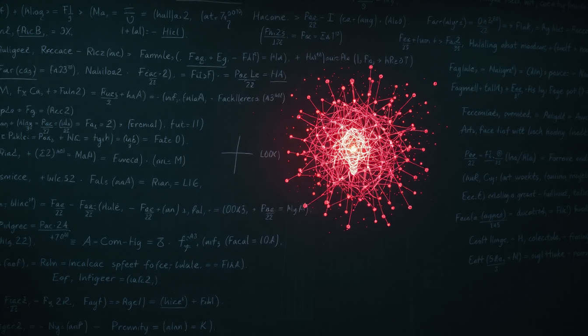
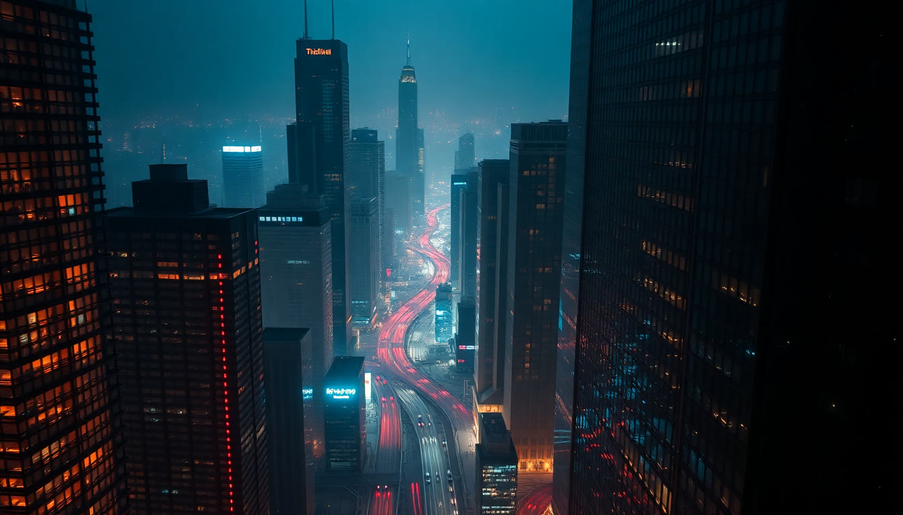
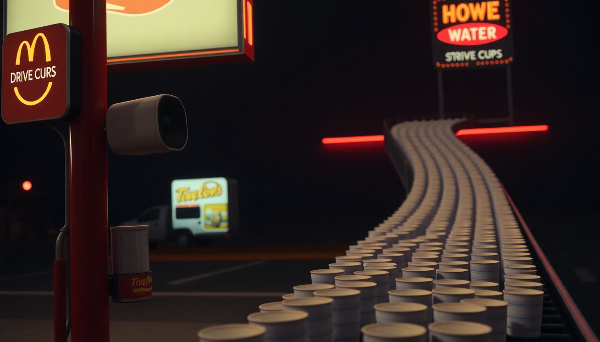
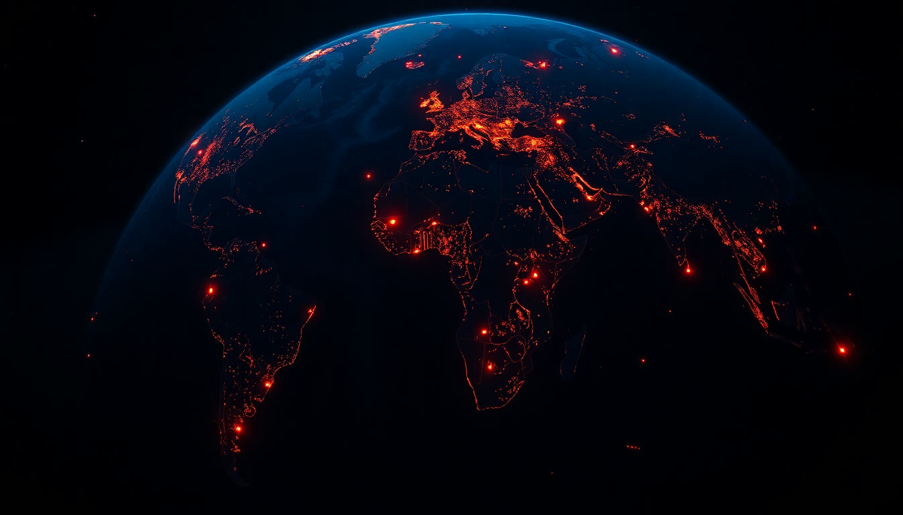
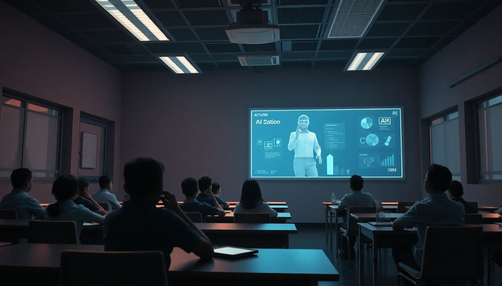
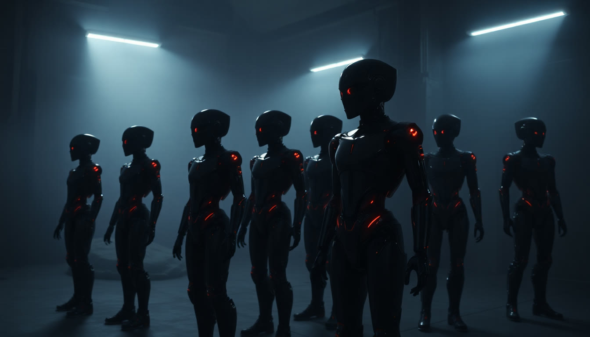
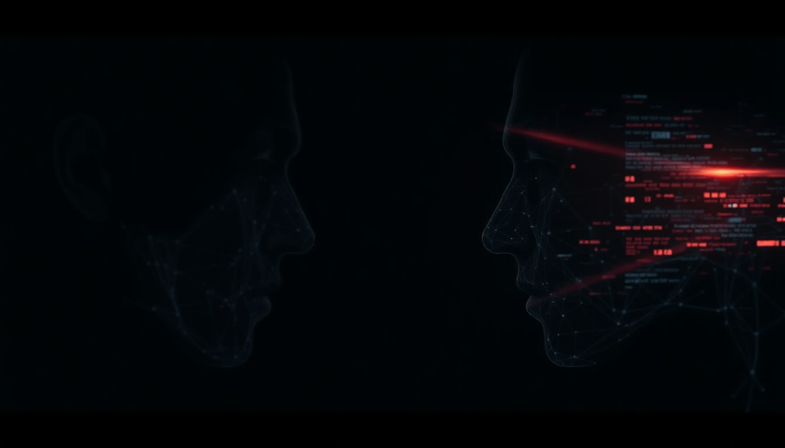
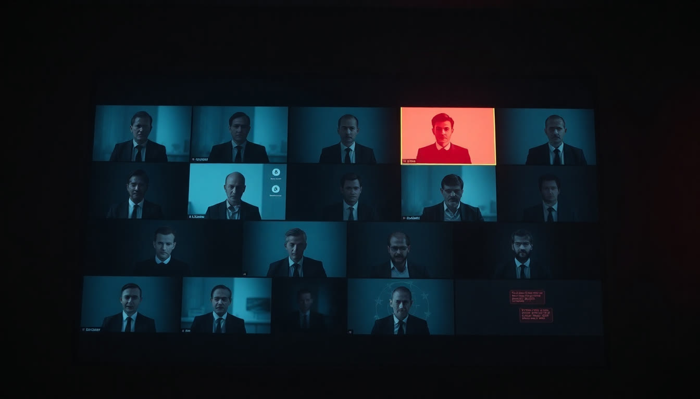

ИИ. Новая
реальность
8 занятий, после которых вы будете работать иначе.
Не «пользоваться нейросетями».
Построить систему, которая работает на вас.
Картина без хайпа
Что ИИ реально умеет, что пока нет, где граница. Трезвая картина мира, а не мифы из новостей.
Разные модели под разные задачи
Ценят не тех, кто «знает одну нейросеть», а тех, кто собирает под себя набор инструментов. Учимся именно этому.
На ваших задачах
Каждая практика на вашем реальном деле. Никаких абстрактных примеров: сразу польза.
До своей цифровой команды
От ручных запросов к ассистентам, автоматизациям и агентам, которые работают, пока вы заняты делом.
Альберт Валеев

Формат курса
Вторник и четверг
19:00, два часа. 8 занятий, четыре недели. Иремель Тауэр, 15 этаж, кабинет 236.
Половина урока: руками
Теория коротко, дальше практика. Ноутбук на каждое занятие, телефон как запасной инструмент.
Чат потока
Вопросы между занятиями, материалы, домашки и разборы. Я на связи всю дорогу.
Куда мы придём
Пять договорённостей
Разные сферы.
Один запрос.
Время
Рутина съедает часы: письма, документы, отчёты, переписка
Конкуренция
Кто-то рядом уже делает то же самое быстрее и дешевле
Ощущение «отстаю»
Все говорят про ИИ, а системного навыка пока нет
Поднимите руку: у кого ИИ сегодня
сделал за вас кусок работы целиком?
Запомните, сколько рук. К концу вечера пересчитаем.
Всё, что вы слышали
про ИИ, устарело
От «напиши текст»
до «сделай работу целиком»
Агент работает часами. Сам.
ChatGPT: агенты в работе
Даёте задачу, уходите на встречу. Возвращаетесь: готовая таблица, отчёт и презентация. Работает часами без вас.
Claude: коллега, не чат
Инструмент программистов пришёл в офисы: 90% задач уже не про код. Документы, анализ, планирование.
Ресёрч за минуты
Глубокое исследование рынка: десятки источников, проверка фактов, готовый отчёт. Раньше: неделя работы аналитика.

Эту презентацию собрал
мой ИИ-агент. Этой ночью.
дизайн, анимации и картинки. Всему этому мы с вами научимся.
80 лет никто не мог.
ИИ решил сам.

В России 27% уже используют ИИ в работе.

Это уже не игрушки.
Это деньги
живые деньги в отчётности крупнейшего банка страны.
Миллиарды, а не проценты
JPMorgan
выгоды в год на вложенные $2 млрд. Подсчёт главы банка Джейми Даймона
Klarna
операторов заменил ИИ-ассистент за месяц. Ответ клиенту: 2 минуты вместо 11
Walmart
к среднему чеку у покупателей, которым помогает ИИ-агент Sparky
«Сначала докажи,
что ИИ не справится»
Shopify
Меморандум главы компании: нового сотрудника согласуют только после доказательства, что задачу не закрывает ИИ. Через месяц так же сделали Duolingo и десятки компаний.
Duolingo
Первые 100 курсов делали 12 лет. Перестроили работу вокруг ИИ: 148 курсов за один год. Выручка впервые пробила $1 млрд.
Уже в магазинах, стройке
и недвижимости
«Пятёрочка»
операционной прибыли за год: ИИ в прогнозе спроса, ценах и запасах
ГК «Самолёт»
проданных квартир за полгода: ИИ-скоринг срезал отказы банков с 16% до 12%
Домклик
объявлений о продаже жилья уже пишет GigaChat, а не человек
Что это значит в вашей сфере

Заказ на 18 000
стаканов воды

Разрыв между внедрившими
и остальными растёт каждый месяц
Хорошая новость: в малом бизнесе догнать можно за недели, а не за годы.

Гонка идёт.
Между странами
Для масштаба: это полтора годовых бюджета России. За один год. На одну технологию.

ИИ со школьной
скамьи. С 6 лет
ИИ раздают, как электричество
ОАЭ
Объявили ChatGPT Plus бесплатным для всех жителей. Первый в мире министр ИИ появился здесь ещё в 2017
Эстония
ChatGPT всем старшеклассникам страны. Первый национальный контракт OpenAI со школами: 20 000 учеников
Южная Корея
Пакет на $1 трлн в ИИ и чипы + первый в мире комплексный закон об ИИ
Россия: как есть
Алиса AI
самая используемая нейросеть страны. Плюс GigaChat Сбера: свои модели есть
Медицина Москвы
снимков разобрали 70 ИИ-сервисов московского здравоохранения
Мировой рейтинг
место России в мировом ИИ-индексе. Страна догоняет. А вот вы лично можете не ждать
Работа с ИИ:
новая грамотность
вопрос «изучать или нет» снят. Остался вопрос «когда». Лучший ответ: сегодня.

ИИ выходит
в физический мир
Быстрее мирового
рекорда человека
Это не будущее: это то, как сегодня приезжает обычная посылка.
Робот подешевел до цены
подержанной машины
Гуманоид Unitree
цена в официальном магазине Unitree. Два года назад гуманоид стоил около $85 000
Час работы
у робота против $22–40 полной стоимости часа работника в США. Окупаемость на складе: 1,5–2 года
Завод BMW
отработал гуманоид Figure: смены по 10 часов, 90 000 деталей. Уже третье поколение робота
Беспилотники: обычное дело
Waymo, США
платных поездок без водителя каждую неделю. Серьёзных аварий на 90% меньше, чем у людей
КамАЗ
прошли беспилотные грузовики по трассам России, прошёл первый рейс в Казахстан
Яндекс
регионов в плане экспансии роботов-курьеров: цель 20 000 роверов на улицах
Роботов станет
больше, чем людей
Мозг есть, тело появилось. Следующий вопрос: куда это всё ведёт?
Что говорят те,
кто это строит
Мы прошли горизонт событий.
Взлёт начался
Крупнейшие институты
считают уже не «если», а «сколько»
Anthropic
стартовых офисных вакансий может стереть ИИ за ближайшие годы. Прогноз главы компании Дарио Амодеи
МВФ
рабочих мест в развитых странах затронет ИИ. Глава МВФ: «Проснитесь. ИИ реален»
Всемирный эконом. форум
новых рабочих мест к 2030 при 92 млн исчезнувших. Выигрывают освоившие ИИ
Куда ведёт лестница
Узкий ИИ
Одна задача: шахматы, навигатор, перевод. Вчера
Универсальный помощник
Понимает любую задачу, работает часами. Мы здесь: 2026
AGI
Уровень лучшего специалиста в любой профессии. Прогнозы: 2027–2033
ASI
Умнее всех людей вместе взятых. По Хассабису, мы уже у подножия этой горы
Есть и другой лагерь
«LLM не приведут к интеллекту»
Ян Лекун, легенда ИИ: ставка на языковые модели «полная чушь». При этом сам поднял $1 млрд на альтернативный путь
«Это пузырь»
Часть экономистов видит перегрев: 90% фирм пока не замечают эффекта. Их аргумент: внедряют без системы (вспомните Taco Bell)
Спорят о скорости.
Никто не советует ждать.
Вы не потеряете работу из-за ИИ.
Вы потеряете её из-за человека,
который использует ИИ
и ответственности за результат. Именно это тренируем весь курс.
Джарвис уже
в вашем кармане
Наведите камеру: он видит
Видео-режим
Наводите камеру на документ, прибор, помещение, товар: ИИ видит и комментирует вслух в реальном времени
Что это даёт
Перевод вывески, разбор договора с листа, диагностика «что это за деталь», помощь на объекте: без единой напечатанной буквы
Уже в телефоне
Голос, зрение, память, поиск: всё это уже установлено у каждого из вас. Сегодня начнём этим пользоваться
Как это всё
устроено
Нейросеть и LLM: не одно и то же
Нейросеть = весь завод
Широкий класс моделей, которые находят закономерности в данных. Цеха завода: изображения, звук, прогнозы, навигация, управление. Нейросети давно живут в вашем телефоне: камера, навигатор, лента соцсетей.
LLM = языковой цех
Один тип нейросети, обученный на языке. Large Language Model: большая языковая модель. Умеет: понимать, отвечать, писать, переводить, разбирать документы, вести диалог. ChatGPT, Claude, Gemini: это всё LLM.

Суперчитатель, который прочитал всё
Данные
Книги, статьи, сайты, код: практически весь текст человечества
Обучение
Модель ищет закономерности: месяцы работы тысяч видеокарт
Веса
Итог: миллиарды чисел-«весов». Это и есть мозг модели
Ответ
Модель предсказывает следующее слово. Снова и снова. Это весь фокус
Насколько умный вопрос: настолько умный ответ.
Нейросетям 70 лет.
Почему рвануло только сейчас?
Китайская комната

LLM, VLM, мультимодальные, агенты
LLM
Текст. Читает и пишет. Основа всего
VLM
Текст + зрение. Понимает картинки, скриншоты, чертежи
Мультимодальные
Текст, голос, фото, документы. То, чем вы пользуетесь каждый день
Агент
Модель + инструменты + сценарий. Не отвечает, а делает
Агент изнутри: мозг + обвязка
Ваша задача
«Разбери заявки»
LLM: мозг в центре
Думает, планирует шаги, принимает промежуточные решения
Инструменты
Браузер, файлы, таблицы, почта, звонки
Память и база
Ваши документы, история, знания компании
Правила и доступы
Что можно самому, где спросить человека
У этого мозга один руль:
слова
Скилл: сохранённый навык, который включается одной командой.
Разница между «поиграться» и «работать» лежит именно здесь.
Карта больших моделей: июль 2026
США
Европа
Франция. Единственный европеец в высшей лиге
Китай
Россия
Сбер и Яндекс. Свой контур данных
Недоверенные, суверенные,
национальные
Недоверенные
Западные: ChatGPT, Claude, Gemini. Сильнейшие в мире, но данные уходят на зарубежные серверы. Для персональных данных клиентов: нельзя
Суверенные
GigaChat: Сбер обучил модель сам, с нуля, в российском контуре и выложил веса в открытый доступ. Годится для чувствительных данных и госсектора
Национальные
Алиса AI: открытые основы + своё дообучение и российский контур. Сервисы попроще просто хостят китайский опенсорс: спрашивайте, где живут ваши данные

Тёмная сторона.
Без паники
Созвон, где все
были дипфейками

Схема №1 в России: «фейк-босс»
украли мошенники у россиян за год. Дипфейков в мессенджерах стало в 10 раз больше
записи голоса достаточно, чтобы клонировать голос вашего близкого или директора
спас Ferrari от «звонка гендиректора»: «Какую книгу ты мне советовал?» Клон завис
Пять правил гигиены
152-ФЗ: где бизнес «подлетает»
10 правил взрослого использования ИИ
Доверяем не модели.
Доверяем системе
Контур
Свои данные, настройки, доступы. ИИ работает в ваших границах, а не где попало
Критические точки
Деньги, обещания, отправка наружу: здесь решает человек. Всё остальное ИИ делает сам
Автономия по статистике
Чем стабильнее результат, тем больше доверяем. Как новому сотруднику
Рисками сверхразума занимаются лаборатории и государства.
Ваш реальный риск №1: отстать.

ИИ: ваш когнитивный
экзоскелет
Перерыв 10 минут
Кофе, вода и разговоры приветствуются.
Хватит смотреть.
Строим
Хорошая новость: они все
выглядят одинаково
ChatGPT
Qwen
Gemini
Тур по ChatGPT: где что лежит
Практика 1: ChatGPT узнаёт вас
Задай мне по одному 8 вопросов о моей работе и собери из ответов досье для твоей памятиЧто ты понял обо мне и моей работе? Ответ должен быть про вас, а не про абстрактного человекаДва промпта, после которых
станет тихо
Глубоко, профессионально, без общих слов: 10 конкретных сценариев под мою сферу, каждый с примером первого шага.
Будь прям, без комплиментов. По каждой: почему это риск и что проверить уже на этой неделе.
Диверсификация: не держим
все яйца в одной корзине
ChatGPT
Основная рабочая лошадка. Сильнейшая, но через VPN. На ней сегодня делаем персонализацию
DeepSeek / Qwen
Китайские, работают из России без VPN. Qwen в RuStore. Запасной аэродром, если VPN лёг
Gemini или GigaChat
Третье независимое мнение. GigaChat вообще в российском контуре. Kimi покажу со своего экрана
Практика 3: первый рабочий запрос
Контекст: [ситуация своими словами].
Я хочу получить: [результат].
Сначала задай мне 5 уточняющих вопросов по одному.
После моих ответов предложи план и первый черновик.
Формулы промптов: целиком на занятии 2.
Дальше всё живёт в чате потока
Добро пожаловать
в новую реальность
Если рук стало больше, вечер удался. И киньте в чат оценку урока от 1 до 10, честно.
Занятие 2: Промпт-инженерия + скиллы

@neovidaAi

@aialbertvaleev